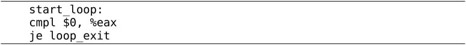
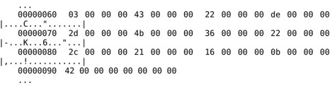
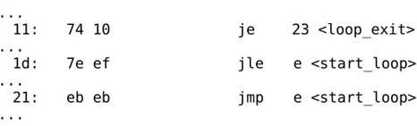

要彻底搞清楚C语言的原理，就必须深入到指令一层去理解。你写一行C代码，编译器会生成什么样的指令，要做到心中有数。本章介绍汇编程序的一些基础知识。汇编不是本书的重点，本书要求读者能看懂基本的汇编程序而不要求会写汇编程序，下一章将在汇编的基础上讨论C语言的原理。
例17.1 最简单的汇编程序
把这个程序保存成文件hello.s（汇编程序通常以.s作为文件名后缀），用汇编器as把汇编程序中的助记符翻译成机器指令，生成目标文件hello.o：
然后用链接器（Linker，或Link Editor）ld把目标文件hello.o链接成可执行文件hello：
为什么用汇编器翻译成机器指令了还不行，还要有一个链接的步骤呢？链接主要有两个作用，一是修改目标文件中的信息，对地址做重定位，在第17.5.2节详细解释，二是把多个目标文件合并成一个可执行文件，在第18.2节详细解释。我们这个例子虽然只有一个目标文件，但也需要经过链接才能成为可执行文件。
现在执行这个程序，它只做了一件事就是退出，退出状态是4，第3.2节讲过在Shell中可以用特殊变量$?得到上一条命令的退出状态：
所以这段汇编代码相当于在C程序的main函数中return 4;。为什么呢？我们在第18.2节详细解释。
下面逐行分析这个汇编程序。首先，#号表示单行注释，类似于C语言的//注释。
汇编程序中以.开头的名称并不是指令的助记符，不会被翻译成机器指令，而是给汇编器一些特殊指示，称为汇编指示（Assembler Directive）或伪指令（Pseudo-operation），由于它不是真正的指令所以加个“伪”字。.section指示把代码划分成若干个段（Section），程序被操作系统加载执行时，每个段被加载到不同的地址，操作系统对不同的页面设置不同的读、写、执行权限。.data段保存程序的数据，是可读可写的，相当于C程序的全局变量。本程序中没有定义数据，所以.data段是空的。
.text段保存代码，是只读和可执行的，后面那些指令都属于.text段。
_start是一个符号（Symbol），符号在汇编程序中代表一个地址，可以用在指令中，汇编程序经过汇编器的处理之后，所有的符号都被替换成它所代表的地址值。在C语言中我们通过变量名访问一个变量，其实就是读写从某个地址开始的内存单元，我们通过函数名调用一个函数，其实就是跳转到该函数第一条指令所在的地址，所以变量名和函数名都是符号，本质上是代表内存地址的。
.globl指示告诉汇编器，_start这个符号要被链接器用到，所以要在目标文件的符号表中标记它是一个全局符号（在第17.5.1节详细解释）。_start就像C程序的main函数一样特殊，是整个程序的入口，链接器在链接时会查找目标文件中的_start符号代表的地址，把它设置为整个程序的入口地址，所以每个汇编程序都要提供一个_start符号并且用.globl声明。如果一个符号没有用.globl声明，就表示这个符号不会被链接器用到。
这里定义了_start符号，汇编器在翻译汇编程序时会计算每个数据对象和每条指令的地址，当看到这样一个符号定义时，就把它后面一条指令的地址作为这个符号所代表的地址。而_start这个符号又比较特殊，它所代表的地址是整个程序的入口地址，所以下一条指令movl $1, %eax就成了程序中第一条被执行的指令。
这是一条数据传送指令，这条指令要求CPU内部产生一个数字1并保存到eax寄存器中。mov的后缀l表示long，说明是32位的传送指令。这条指令不要求CPU读内存，1这个数是在CPU内部产生的，称为立即数（Immediate）。在汇编程序中，立即数前面要加$，寄存器名前面要加%，以便跟符号名区分开。以后我们会看到mov指令还有另外几种形式，但数据传送方向都是一样的，第一个操作数总是源操作数，第二个操作数总是目标操作数。
和上一条指令类似，生成一个立即数4并保存到ebx寄存器中。
前两条指令都是为这条指令做准备的，执行这条指令时发生以下动作：
1．int指令称为软中断指令，可以用这条指令故意产生一个异常，上一章讲过，异常的处理和中断类似，CPU从用户模式切换到特权模式，然后跳转到内核代码中执行异常处理程序。
2．int指令中的立即数0x80是一个参数，在异常处理程序中要根据这个参数决定如何处理，在Linux内核中int $0x80这种异常称为系统调用（System Call）。内核提供了很多系统服务供用户程序使用，但这些系统服务不能像库函数（比如printf）那样调用，因为在执行用户程序时CPU处于用户模式，不能直接调用内核函数，所以需要通过系统调用切换CPU模式，经由异常处理程序进入内核，用户程序只能通过寄存器传几个参数，之后就要按内核设计好的代码路线走，而不能由用户程序随心所欲，想调哪个内核函数就调哪个内核函数，这样可以保证系统服务被安全地调用。在调用结束之后，CPU再切换回用户模式，继续执行int$0x80的下一条指令，在用户程序看来就像函数调用和返回一样。
3．eax和ebx的值是传递给系统调用的两个参数。eax的值是系统调用号，Linux的各种系统调用都是由int $0x80指令引发的，内核需要通过eax判断用户要调哪个系统调用，_exit的系统调用号是1。ebx的值是传给_exit的参数，表示退出状态。大多数系统调用完成之后会返回用户空间继续执行后面的指令，而_exit系统调用比较特殊，它会终止掉当前进程，而不是返回用户空间继续执行。
x86汇编的两种语法：intel语法和AT&T语法
x86汇编一直存在两种不同的语法，在intel的官方文档中使用intel语法，Windows也使用intel语法，而UNIX平台的汇编器一直使用AT&T语法，所以本书使用AT&T语法。movl %edx,%eax这条指令如果用intel语法来写，就是mov eax,edx，寄存器名不加%号，源操作数和目标操作数的位置互换，字长也不是用指令的后缀l表示而是用另外的方式表示。本书不详细讨论这两种语法之间的区别，读者可以查阅参考文献[22]。
介绍x86汇编的书很多，UNIX平台的书都采用AT&T语法，例如参考文献[2]，其他书一般采用intel语法，例如参考文献[23]。
1．把本节例子中的int $0x80指令去掉，汇编、链接也能通过，但是执行的时候出现段错误，你能解释其原因吗？
x86的通用寄存器有eax、ebx、ecx、edx、edi、esi。这些寄存器在大多数指令中是可以任意选用的，比如movl指令可以把一个立即数传送到eax中，也可传送到ebx中。但也有一些指令规定只能用其中某个寄存器做某种用途，例如除法指令idivl要求被除数在eax寄存器中，edx寄存器必须是0，而除数可以在任意寄存器中，计算结果的商数保存在eax寄存器中（覆盖原来的被除数），余数保存在edx寄存器中。也就是说，通用寄存器对于某些特殊指令来说也不是通用的。
x86的特殊寄存器有ebp、esp、eip、eflags。eip是程序计数器，eflags保存着计算过程中产生的标志位，其中包括第13.3节讲过的进位标志、溢出标志、零标志和负数标志，在intel的手册中这几个标志位分别称为CF、OF、ZF、SF。ebp和esp用于维护函数调用的栈帧，在第18.1节详细讨论。
例17.2 求一组数中最大值的汇编程序
汇编、链接、运行：
这个程序在一组数中找到一个最大的数，并把它作为程序的退出状态。这组数在.data段给出：
.long指示声明一组数，每个数占32位，相当于C语言中的数组。这个数组开头定义了一个符号data_items，汇编器会把数组的首地址作为data_items符号所代表的地址，data_items类似于C语言中的数组名。data_items这个标号没有用.globl声明，因为它只在这个汇编程序内部使用，链接器不需要用到这个名字。除了.long之外，常用的数据声明还有：
⦁ .byte，也是声明一组数，每个数占8位
⦁ .ascii，例如.ascii "Hello world"，声明11个数，取值为相应字符的ASCII码。注意，和C语言不同，这样声明的字符串末尾是没有'\0'字符的，如果需要以'\0'结尾可以声明为.ascii "Hello world\0"。
data_items数组的最后一个数是0，我们在一个循环中依次比较每个数，碰到0的时候让循环终止。在这个循环中：
⦁ edi寄存器保存数组中的当前位置，每次比较完一个数就把edi的值加1，指向数组中的下一个数。
⦁ ebx寄存器保存到目前为止找到的最大值，如果发现有更大的数就更新ebx的值。
⦁ eax寄存器保存当前要比较的数，每次更新edi之后，就把下一个数读到eax中。
初始化edi，指向数组的第0个元素。
这条指令把数组的第0个元素传送到eax寄存器中。data_items是数组的首地址，edi的值是数组的下标，4表示数组的每个元素占4字节，那么数组中第edi个元素的地址应该是data_items + edi * 4，写在指令中就是data_items(,%edi,4)，这种地址表示方式在下一节还会详细解释。
ebx的初始值也是数组的第0个元素。下面我们进入一个循环，循环的开头定义一个符号start_loop，循环的末尾之后定义一个符号loop_exit。

比较eax的值是不是0，如果是0就说明到达数组末尾了，就要跳出循环。cmpl指令将两个操作数相减，但计算结果并不保存，只是根据计算结果改变eflags寄存器中的标志位。如果两个操作数相等，则计算结果为0，eflags中的ZF位置1。je是一个条件跳转指令，它检查eflags中的ZF位，ZF位为1则发生跳转，ZF位为0则不跳转，继续执行下一条指令。可见比较指令和条件跳转指令是配合使用的，前者改变标志位，后者根据标志位决定是否跳转。je可以理解成“jump if equal”，如果参与比较的两数相等则跳转。
将edi的值加1，把数组中的下一个数传送到eax寄存器中。
把当前数组元素eax和目前为止找到的最大值ebx做比较，如果前者小于等于后者，则最大值没有变，跳转到循环开头比较下一个数，否则继续执行下一条指令。jle表示“jump if less than or equal”。
更新了最大值ebx然后跳转到循环开头比较下一个数。jmp是一个无条件跳转指令，什么条件也不判断，直接跳转。loop_exit符号后面的指令调_exit系统调用退出程序。
通过上一节的例子我们了解到，访问内存时在指令中可以用多种方式表示内存地址，比如可以用数组基地址、元素长度和下标三个量来表示，增加了寻址的灵活性。本节介绍x86常用的几种寻址方式（Addressing Mode）。内存寻址在指令中可以表示成如下的通用格式：
它所表示的地址可以这样计算出来：
其中ADDRESS_OR_OFFSET和MULTIPLIER必须是常数，BASE_OR_OFFSET和INDEX必须是寄存器。在有些寻址方式会省略这4项中的某些项，相当于这些项是0。
⦁ 直接寻址（Direct Addressing Mode）。只使用ADDRESS_OR_OFFSET寻址，例如movl ADDRESS, %eax把ADDRESS地址处的32位数传送到eax寄存器。
⦁ 变址寻址（Indexed Addressing Mode） 。上一节的movl data_items(,%edi,4),%eax就属于这种寻址方式，用于访问数组元素比较方便。
⦁ 间接寻址（Indirect Addressing Mode）。只使用BASE_OR_OFFSET寻址，例如movl (%eax), %ebx，把eax寄存器的值看作地址，把内存中这个地址处的32位数传送到ebx寄存器。注意和movl %eax, %ebx区分开。
⦁ 基址寻址（Base Pointer Addressing Mode）。只使用ADDRESS_OR_OFFSET和BASE_OR_OFFSET寻址，例如movl 4(%eax), %ebx，用于访问结构体成员比较方便，例如一个结构体的基地址保存在eax寄存器中，其中一个成员在结构体内的偏移量是4字节，要把这个成员读上来就可以用这条指令。
⦁ 立即数寻址（Immediate Mode）。就是指令中有一个操作数是立即数，例如movl $12, %eax中的$12，这其实跟寻址没什么关系，但也算做一种寻址方式。
⦁ 寄存器寻址（Register Addressing Mode）。就是指令中有一个操作数是寄存器，例如movl $12, %eax中的%eax，这跟内存寻址没什么关系，但也算作一种寻址方式。在汇编程序中寄存器用助记符来表示，在机器指令中则要用几个bit表示寄存器的编号，这几个bit也可以看作寄存器的地址，但是和内存地址不在一个地址空间。
ELF（Executable and Linking Format）是一个开放标准，各种UNIX系统都支持ELF格式的可执行文件，它有三种不同的类型：
⦁ 可重定位的目标文件（Relocatable，或者Object File）
⦁ 可执行文件（Executable）
⦁ 共享库（Shared Object，或者Shared Library）
共享库留到第19.4节再详细介绍，本节我们以例17.2为例讨论目标文件和可执行文件的格式。现在详细解释一下这个程序的汇编、链接、运行过程：
1．写一个汇编程序保存成文本文件max.s。
2．汇编器读取这个文本文件转换成目标文件max.o，目标文件由若干个Section组成，我们在汇编程序中声明的.section会成为目标文件中的Section，此外汇编器还会自动添加一些Section（比如符号表）。
3．然后链接器把目标文件中的Section合并成几个Segment①⑦，生成可执行文件max。
4．最后加载器（Loader）根据可执行文件中的Segment信息加载运行这个程序。
ELF格式提供了两种不同的视角，链接器把ELF文件看成是Section的集合，而加载器把ELF文件看成是Segment的集合，如图17.1所示。
左边是从链接器的视角来看ELF文件，开头的ELF Header描述了体系结构和操作系统等基本信息，并指出Section Header Table和Program Header Table在文件中的什么位置，Program Header Table在链接过程中用不到，所以是可有可无的，Section Header Table中保存了所有Section的描述信息，通过Section Header Table可以找到每个Section在文件中的位置。右边是从加载器的视角来看ELF文件，开头是ELF Header，Program Header Table中保存了所有Segment的描述信息，Section Header Table在加载过程中用不到，所以是可有可无的。从图17.1可以看出，一个Segment由一个或多个Section组成，这些Section加载到内存时具有相同的访问权限。有些Section只对链接器有意义，在运行时用不到，也不需要加载到内存，那么就不属于任何Segment。注意Section Header Table和Program Header Table并不是一定要位于文件的开头和结尾，其位置由ELF Header指出，图17.1这么画只是为了清晰。
图17.1 ELF文件
目标文件需要链接器做进一步处理，所以一定有Section Header Table；可执行文件需要加载运行，所以一定有Program Header Table；而共享库既要加载运行，又要在加载时做动态链接，所以既有Section Header Table又有Program Header Table。
17.5.1 目标文件
下面用readelf工具读出目标文件max.o的ELF Header和Section Header Table，然后我们逐段分析。

ELF Header中描述了这样一些信息：
⦁ 每个ELF文件开头四个字节都是0x7f、0x45、0x4c、0x46，其中后三个字节就是“ELF”的ASCII码，在文件开头用几个特殊字符来标识文件类型是UNIX系统的惯用伎俩，这称为Magic Number，file(1)命令就是通过分析Magic Number和其它一些特征来确定文件类型的；
⦁ 文件格式是ELF32；
⦁ 字节序是小端；
⦁ 操作系统是UNIX；
⦁ 文件类型是Relocatable file（即可重定位的目标文件）；
⦁ 体系结构是Intel 80386；
⦁ 程序的入口地址是0x0，因为目标文件的入口地址还没确定，链接成可执行文件时才能确定入口地址；
⦁ Program Header Table在文件中的开始位置是0，因为目标文件没有Program Header Table，链接成可执行文件时才会有Program Header Table；
⦁ Section Header Table在文件中的开始位置是200，以下我们称其为文件地址，规定文件开头第一个字节的地址是0，然后每个字节占一个地址，所以200是文件中的第201个字节；
⦁ 此ELF Header的大小是52字节；
⦁ Section Header Table中有8个Section Header表项，每个表项占40字节，共320字节，所以Section Header Table在文件中的地址范围是200～519（0xc8～0x207）；
⦁ Section Header String Table也是一个Section，它由Section Header Table中的第5个表项来描述。
从Section Header中读出各Section的描述信息，其中.text和.data是我们在汇编程序中声明的Section，而其他Section是汇编器自动添加的。Addr列指出这些Section加载到内存中的地址（虚拟地址），目标文件中各Section的加载地址是待定的，所以是00000000，到链接时再确定这些地址。Off和Size列指出各Section的起始文件地址和长度。比如.data段从文件地址0x60开始，一共0x38个字节，回去翻一下程序，.data段定义了14个4字节的整数，一共是56个字节，也就是0x38。根据以上信息可以描绘出整个目标文件的布局，如表17.1所示。
表17.1 目标文件的布局
这个文件不大，我们直接用hexdump工具把目标文件的字节全部打印出来看。
左边一列是文件地址，中间是每个字节的十六进制表示，右边是把这些字节解释成ASCII码所对应的字符。中间有一个*号表示省略的部分全是0。.data段对应的是这一块：

.data段将被原封不动地加载到内存中，下一小节会看到.data段被加载到内存地址0x080490a0～0x080490d7。
.shstrtab和.strtab这两个Section中存放的都是ASCII码：
可见.shstrtab段保存着各Section的名字，.strtab段保存着程序中用到的符号的名字，每个名字都是以Null结尾的字符串。
我们知道，C语言的全局变量如果在代码中没有初始化，就会在程序加载时用0初始化。这种数据属于.bss段，在加载时它和.data段一样都是可读可写的数据，但是在ELF文件中.data段需要占用一部分空间保存初始值，而.bss段则不需要。也就是说，.bss段在文件中只占一个Section Header而没有对应的Section，程序加载时.bss段占多大内存空间在Section Header中描述。在我们这个例子中没有用到.bss段，在第18.3节会看到这样的例子。
我们继续分析readelf输出的最后一部分，是从.rel.text和.symtab这两个Section中读出的信息。
.rel.text告诉链接器指令中的哪些地方需要做重定位，在下一小节详细讨论。
.symtab是符号表。Ndx列是每个符号所在的Section编号，例如符号data_items在第3个Section里（也就是.data段），各Section的编号见Section Header Table。Value列是每个符号所代表的地址，在目标文件中，符号地址都是相对于该符号所在Section的相对地址，比如data_items位于.data段的开头，所以地址是0，_start位于.text段的开头，所以地址也是0，但是start_loop和loop_exit相对于.text段的地址就不是0了。从Bind这一列可以看出_start这个符号是GLOBAL的，而其他符号是LOCAL的，在汇编程序中用.globl指示声明过的符号会成为全局符号，否则成为局部符号。
现在剩下.text段没有分析，objdump工具可以把程序中的机器指令反汇编（Disassemble），那么反汇编的结果是否跟原来写的汇编代码一模一样呢？我们对比分析一下。
左边是机器指令的字节，右边是反汇编结果。显然，所有的符号都被替换成地址了，比如je 23，注意没有加$的数表示内存地址，而不表示立即数。这条指令后面的<loop_exit>并不是指令的一部分，而是反汇编器从.symtab和.strtab中查到的符号名称，写在后面是为了有更好的可读性。目前所有指令中用到的符号地址都是相对地址，下一步链接器要修改这些指令，把其中的地址都改成加载时的内存地址，这些指令才能正确执行。
17.5.2 可执行文件
现在我们按上一节的步骤分析可执行文件max，看看链接器都做了什么改动。
在ELF Header中，Type改成了EXEC，由目标文件变成可执行文件了，Entry point address改成了0x8048074（这是_start符号的地址），还可以看出，多了两个Program Header，少了两个Section Header。
在Section Header Table中，.text和.data段的加载地址分别改成了0x08048074和0x080490a0。.bss段没有用到，所以被删掉了。.rel.text段就是用于链接过程的，做完链接就没用了，所以也删掉了。
多出来的Program Header Table描述了两个Segment的信息。.text段和前面的ELF Header、Program Header Table一起组成一个Segment（FileSiz指出总长度是0x9e），.data段组成另一个Segment（总长度是0x38），以后我们把这两个Segment分别叫做Text Segment和Data Segment。VirtAddr列指出Text Segment加载到虚拟地址0x08048000（注意在x86平台上后面的PhysAddr列是没有意义的，并不代表实际的物理地址），Data Segment加载到地址0x080490a0。Flg列指出Text Segment的访问权限是可读可执行，Data Segment的访问权限是可读可写。最后一列Align的值0x1000（4K）是x86平台的内存页面大小。在加载时文件也要按内存页面大小分成若干页，文件中的一页对应内存中的一页，对应关系如图17.2所示。
图17.2 文件和加载地址的对应关系
这个可执行文件很小，总共也不超过一页大小，但是两个Segment必须加载到内存中两个不同的页面，因为MMU的权限保护机制是以页为单位的，一个页面只能设置一种权限。所以Text Segment加载到虚拟地址0x08048000～0x08048fff的内存页面，而Data Segment加载到虚拟地址0x08049000～0x08049fff的内存页面。此外，为了简化链接器和加载器的实现，还规定每个Segment在文件的页面中偏移多少加载到内存页面也要偏移多少。Text Segment在文件的第0个页面开头，加载到内存页面也是从首地址0x08048000开始，由于Text Segment包含了文件名和.text段，所以.text段的加载地址是0x08048074，_start符号位于.text段的开头，所以_start符号的地址也是0x08048074，从符号表中可以验证这一点。Data Segment在文件的第0个页面中的偏移是0xa0，在内存页面中的偏移也是0xa0，所以从0x080490a0开始。
原来目标文件符号表中的Value都是相对地址，现在都改成绝对地址了。此外还多了三个符号__bss_start、_edata和_end，这些符号在链接脚本中定义，被链接器添加到可执行文件中，链接脚本在第19.1节介绍。
再看一下反汇编的结果：
指令中的相对地址都改成绝对地址了。我们仔细检查一下改了哪些地方。
首先看跳转指令，原来目标文件的指令是这样：

现在改成了这样：
改了吗？其实只是反汇编的结果不同了，指令的机器码根本没变。为什么不用改指令就能跳转到新的地址呢？因为跳转指令中指定的是相对于当前指令向前或向后跳多少字节，而不是指定一个完整的内存地址，内存地址有32位，这些跳转指令只有16位，显然也不可能指定一个完整的内存地址，这称为相对跳转。这种相对跳转指令只有16位，只能在当前指令前后的一个小范围内跳转，不可能跳得太远，也有的跳转指令指定一个完整的内存地址，可以跳到任何地方，称为绝对跳转。再看内存访问指令，原来目标文件的指令是这样：
现在改成了这样：
指令中的地址原本是0x00000000，现在改成了0x080490a0（注意是小端字节序）。那么链接器怎么知道要改这两处呢？是根据目标文件中的.rel.text段提供的重定位信息来改的：
第一列Offset的值就是.text段需要改的地方，在.text段中的相对地址是8和0x17，正是这两条指令中00 00 00 00的位置。
下面试试用strip命令去除可执行文件中的符号信息，这样可以有效减小文件的尺寸而不影响运行：

注意不要对目标文件和共享库使用strip命令，因为链接器需要利用目标文件和共享库中的符号信息来做链接。